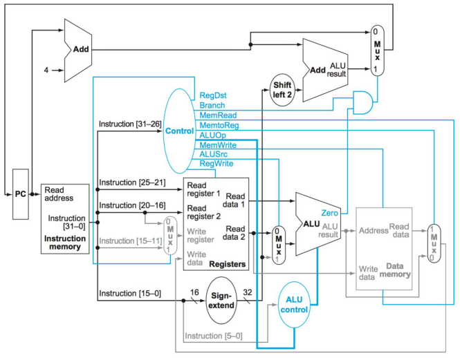

Single Cycle CPU
This is my final project for my Computer Architecture. Me and 3 other students
out of 80 were the only ones to complete it. The objective is to
design a 32-bit CPU based on the 32-bit MIPS instruction set. 32-bit meaning the
addresses are 32 bits, the data elements are 32-bit integers, instruction length,
etc. I implemented R and I type instructions. Below is a demonstration.
Software and Hardware
This Single Cycle CPU is designed on Intel's Quartus and implemented on
the Altera DE2-70 Development and Education Board. The language the programming
is done is VHDL.
The Design
A single cycle CPU is a CPU that does everything on a single clock cycle.
Load things into registers, computations, incrementing PC, etc. It can be seen below.

A 32-bit instruction is fed into the instruction memory, and each part of
the 32-bit instruction goes to different components. A lot of components here
I have designed and simulated using VHDL in previous labs, such as the 32-bit SRAM for
the instruction memory, the 32-bit adder to increment the PC counter. My source/work can
be found on my github, the link beind under the links section of this website.
How it works
In the above picture, notice the paths. The instruction is "broken up" and sent to
through different paths, for example, bits 31-26 of the instruction go to control unit, which
basically act as an opcode. These then activate certain enable lines depending on the opcode, for
example, a memory write, a branch, etc. Bits 25-21, 20-16, are sent to the registers unit, etc.
All the groups of bits are needed for different parts, again, per based on the MIPS architecture.
Below is a video of the design. Note, it's sped up due to my professor's requirements.
The Challenge
The challenge of this will be to get everything to be done under 1 cycle. How is this a challenge?
Well instructions can take certain time, some longer then others. For example, a branch
instruction doesn't need much, you just need to add to the PC, whereas a Memory to Register takes more
time. So you have to have the instructions take long be able to complete under a single cycle just like
the instructions that are not as long.
Back to home